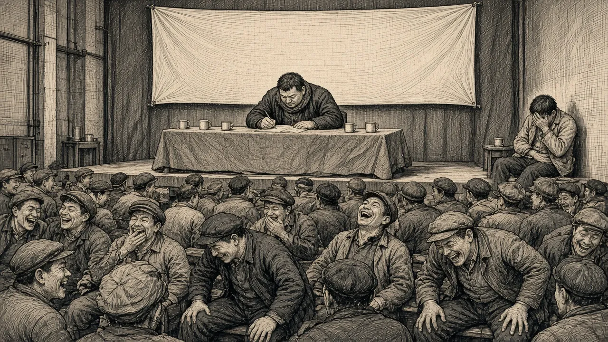

生 活 纪 事
八 “大干苦干加23干”
矿上每年开四次职工代表大会，会前半个月就成立秘书组，撰写各种稿件，组织代表发言，这是我最轻松的时间。份内的稿件可以在家里写，最少给三天时间，我一天都用不了就可写完。第三天集体通稿，领导提提要求，修正完善又有三天。不到大会开幕，写稿子的人有用不完的改写稿件时间。大会开幕了，写稿的秘书和代表们享受同样的会餐，只交粮票不交钱，酒海肉山饱餐三天。因此，每年四次职工代表大会，是我最轻松又快乐的日子。矿上的各种会议很多，每个会都得请矿领导出席讲话，可他们大多数都是大老粗，需要给他们规范地一笔一划写好讲稿，让他们到台上去念，如果稍不注意就会闹笑话。记得一个秘书给某领导写稿子，引用了鼓励大家的那句“我们要大干苦干加巧干”的口号，但“巧”字被他写得潦草一些，领导在台上就念了个“我们要大干苦干加23干”。台下都笑了，秘书吓尿了。

领导在台上就念了个“我们要大干苦干加23干”。台下都笑了，秘书吓尿了。